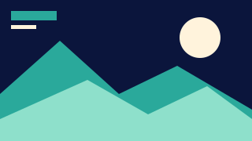

Home / Image presentation
CHEZCAT 0.29 / ORIGINAL IMAGE HANDLING
The right image, in the right place.
Responsive sources, embedded images, cropping and SVG effects. Every example uses ChezCat's own loader and renderer.
Picture sources

A wide viewport chooses purple mountains. A narrow viewport chooses teal. The unsupported AVIF alternative is skipped.
Resize the window, then reload. Source selection uses the viewport and zoom at the start of the load. Ctrl+I shows which source was chosen.
Width candidates
The page supplies 320- and 640-pixel candidates. ChezCat chooses from the declared size and page zoom, then corrects the image's natural dimensions.
This selection makes one request for the chosen source. Repeated references reuse decoded pixels within the page load.
Fit and crop
The same landscape appears inside a 180 by 150 pixel box. The cream background makes unused space visible.
Fill
Stretch to the entire box.
Contain
Keep the whole picture and its proportions.
Cover, aligned right
Crop the left side to fill the box.
Original size
Show original pixels from the top left.
Scale down
Shrink to fit, without enlargement.
Embedded SVG

This SVG lives in a percent-encoded data URL. It does not require an image file or network request.
Embedded PNG

This checkerboard uses base64. The same image preference, decoder limits and pixel handling apply to embedded images.
SVG clipping and masks
Local clipping paths restrict the visible shape. Alpha and luminance masks control transparency. These are static images.


TGA
RLE-compressed true color with transparency. Click the image to open its viewer.
PCX
Three color planes with RLE compression. Click the image to open its viewer.
More to explore
Image formats and animationJPEG galleryGIF galleryReal-site links on Home
AVIF, HEIF/HEIC and JPEG XL are still pending. CSS background images, live source changes after resize or JavaScript edits, color management and complete SVG are separate work.